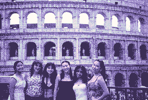
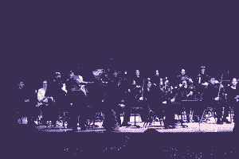
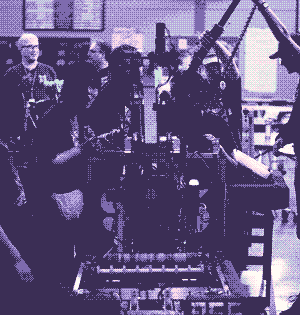
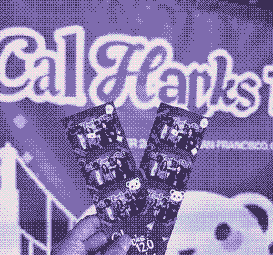
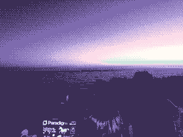
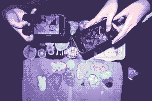

Open to Summer 2027 · PM & SWE
I build the thing, then I find out if it worked.
CS at Stanford, HCI track, minor in MS&E. Right now I'm a product and full-stack engineer at Ditto, a campus matchmaking app. I own retention, match prioritization, and the sentiment system, which mostly means I write the spec, write the code, and then have to explain the graph.
About
Most of what I do sits somewhere between product and engineering. At Ditto that's pretty literal. I write the PRD, then I write the code, then I'm the one explaining the graph two weeks later. It's the fastest way I've found to tell whether an idea was actually good or just sounded good.
Before Stanford I spent two years on robotics research, training perception models for an apple-picking arm. Nothing teaches you the gap between a benchmark and reality like watching something score 86% and then miss the apple. Since then I've done behavioral research on how people reason about cause and effect, and consulting work turning a hundred user interviews into something a team can actually build.
The thread through all of it is wanting to know if it worked. I'd rather instrument something small and watch it move than ship something big and argue about it after.
Outside of that I direct an a cappella group, play in the Stanford Wind Symphony, and spent a term at Oxford writing about platform regulation and AI ethics. Happy to talk about matching algorithms or four-part harmony. Ideally both.
Selected work
Four of these run in production at Ditto. Each write-up is what broke, what I built, and what happened after.
Deactivating was the only way to step back, so people used it for things that weren't permanent. I built the in-between state: a pause flow, timed auto-resume, and an exit hub, out to 18K users in a week.
Ditto guarantees some users a match, and the matcher was keeping that promise 37% of the time. Adding priority tiers to a weighted Gale–Shapley / Edmonds' Blossom matcher without gutting overall volume.
A post-date feedback chatbot that learns what someone actually wants, feeding a production sentiment system that now scores the entire active user base. Two per-surface scores instead of one blended average.
Your friends vote on you across six dimensions, an LLM writes up who that makes you, and the results page hands you back to Ditto. Instrumented from the CTA all the way through onboarding.
Hospitals decide who gets discharged and who gets a bed mostly without forecasting. Two surfaces for two different jobs, over a multi-agent backend that streams every decision before it executes.
Also built
Side projects and research. All of it either shipped to real users or got published.
Students had no way to share rides home over campus breaks. I scoped and shipped the MVP solo. 400+ posted rides, now expanding campus-wide with Students for a Sustainable Stanford.
A YOLOv8 perception model locating apples for a real-time robotic harvester. 100% accuracy unoccluded, 86% under occlusion in field tests. First-author findings at ICRA '23.
Splits a track into stems and lets you remix it live. Librosa and MSAF for BPM, key, and section detection, with chunked processing so long sets don't blow up memory.
Experience
The chronology. If something already has a write-up above, I've linked to it instead of repeating myself.
Product engineer on a campus matching product. I own retention, match prioritization, and the sentiment system, from the PRD and measurement plan through to the production code and whatever the number does after.
Written up above: The Pause Revamp · Three-Tier Match Priority · The Sentiment Loop · The Yearbook
Off the clock






Contact
Looking for PM and SWE roles for Summer 2027. Ideally somewhere I get to figure out what to build and then actually build it.